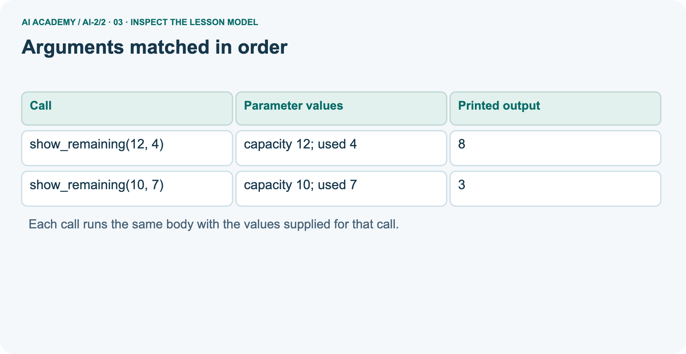
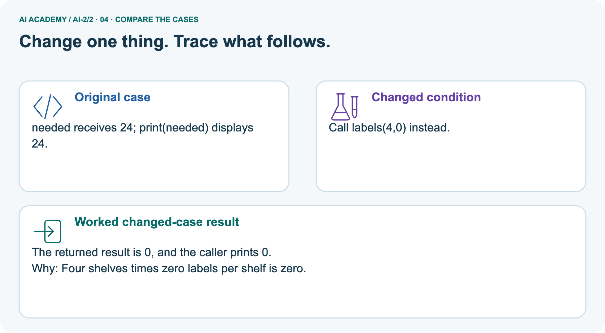
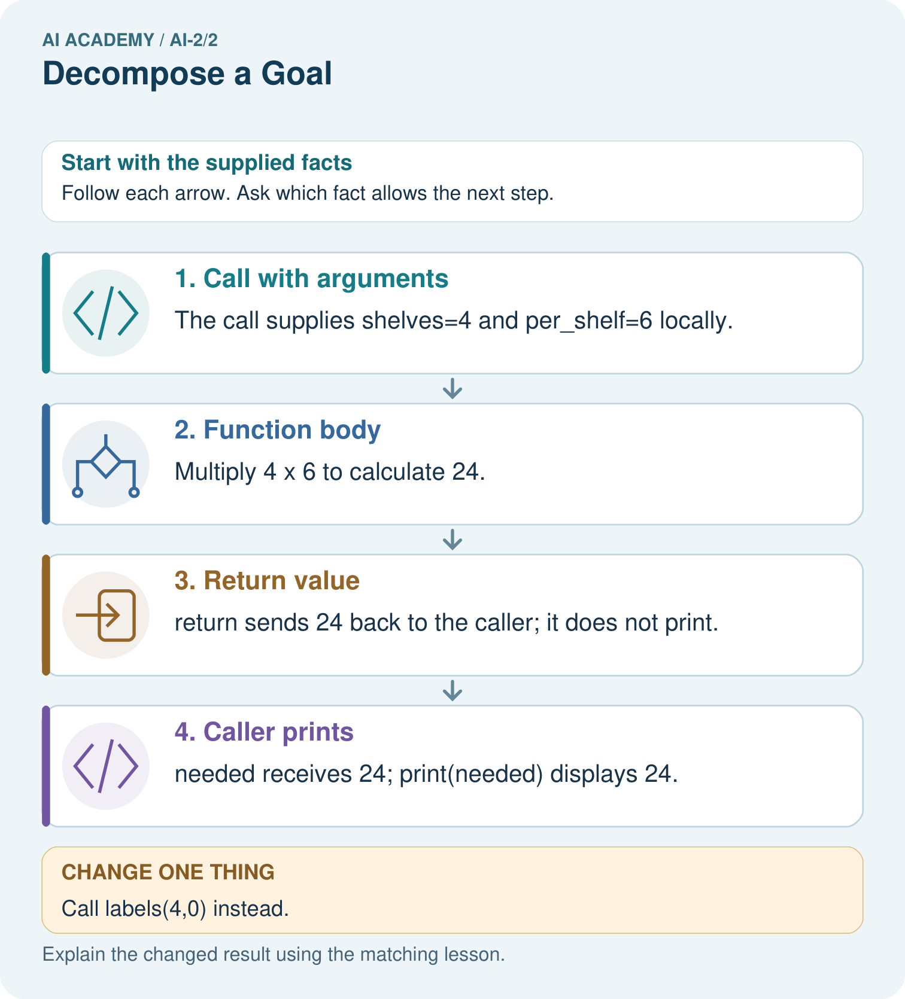
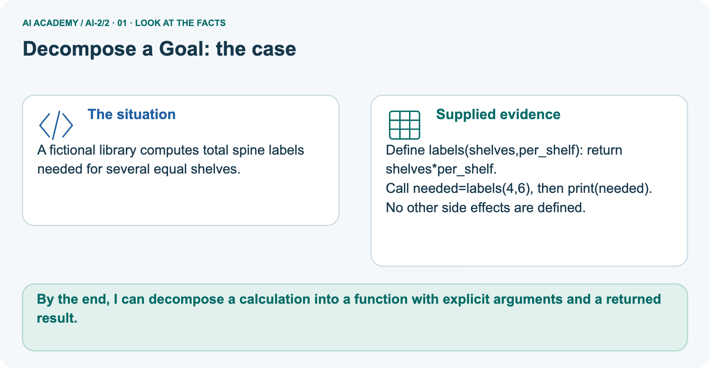
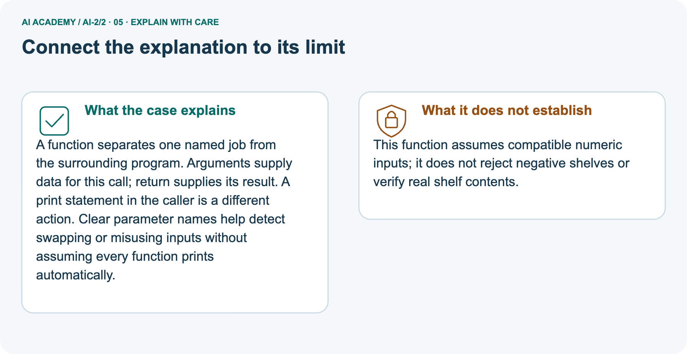
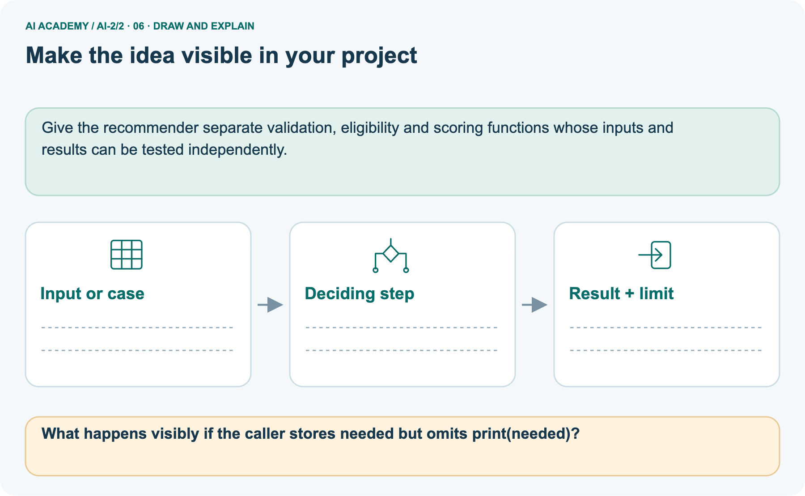

AI Academy · Level 2 · Grade 7 · Week 2 · Student lesson
Decompose a Goal
Learn to understand, design, build, test and explain AI systems responsibly.
Project: Transparent Book Recommender
THE CONNECTED WEEK
Name the job. Supply the arguments. Trace the call.
Define a reusable cupboard calculation, test for fixed-number bugs and compare printing with a labelled return-value preview.
Keep one habit: Define → call with explicit data → inspect the actual result and interface.
Main lesson · Section 1
Define one job. Call it with different data.
Separate the definition, the supplied arguments and the displayed result.
Start with reuse rather than repeated code
A function definition names a reusable job. A call supplies this run’s data. Trace the call before deciding whether the function actually used its arguments.
Recall ordered statements and subtraction
Close your notes first. A rough first answer helps us choose the right starting point; it is not a score for your ability.
After trying, check the relevant lesson or ask your teacher. Change the part of your explanation that the evidence shows was wrong.
A script sets capacity = 12 and used = 4. What does print(capacity - used) display?
Your learning goals
I can distinguish a function definition from a function call.
I can match positional arguments to parameters in order.
I can reuse one function and test that it uses the supplied values.
Earlier wording, alternatives and picture transcripts
Your learning target
Remember before reading
Without opening the old lesson, explain one key idea from Precision in Algorithms. Give an example and a mistake that the idea helps you avoid.
Week 2: Decompose a Goal
Complex tasks become manageable when divided into testable subproblems.

THINKER MISSION
Break a school-morning helper into inputs, decisions, and actions.
Thinker name and date:
Readiness for the connected explanation
This week’s end goal
By the end, I can decompose a calculation into a function with explicit arguments and a returned result.
Main lesson · Section 2
Meet the cupboard remaining-space task
Use an explicit input contract rather than assuming every successful run is meaningful.
State the reusable calculation
A fictional supply cupboard records capacity and the number of occupied spaces. The remaining-space calculation is capacity minus used.
Instead of copying the same instructions for every cupboard, define one function and call it with different values. A function makes a procedure reusable; its name alone does not guarantee that its instructions are correct.
Read the assumed valid inputs and scope
Our input contract requires nonnegative integer counts with used no greater than capacity. The example assumes these conditions; it does not validate them. The main cupboard function prints its result. The labelled extension shows a different interface: returning a value for the caller to use or display.
Earlier wording, alternatives and picture transcripts
PICTURE STORY
Notice → Predict → Explain
Begin with visible evidence. Do not explain more than the picture and information support.
MYSTERY
The learners must use decompose a goal to solve a problem. What information do they have? What decision or calculation do they make? What would count as evidence that it worked?
Three observations (what you can point to):
My prediction and the clue supporting it:
A closer explanation
Main lesson · Section 3
Read the definition before its calls
Indentation defines the body; the unindented calls execute it.
The complete saved script
def show_remaining(capacity, used):
remaining = capacity - used
print(remaining)
show_remaining(12, 4)
show_remaining(10, 7)Match arguments and displayed results
Arguments matched in order
Explain def, parameters, calls and indentation
def introduces the definition. The function name is followed by parameter names in parentheses and a colon. Four-space indentation marks the body. Executing the definition creates the function but does not run its body.
The two unindented calls then run it, producing 8 and 3 on separate lines. A blank line helps readability; indentation determines the block.
Point to the input, the deciding step and the result in this week’s visual. Explain the same step in ordinary words. A picture helps when you can say what each part represents.
Earlier wording, alternatives and picture transcripts
VISUAL MECHANISM
Input → Process → Output
Trace the information. At each stage, ask what changed and how you could test it.

↓

↓

Which stage could fail even when the other two are correct? Explain:
A closer explanation
Connect the picture and the explanation
Main lesson · Section 4
Compare routine, boundary, missing and transfer calls
A second input can reveal a fixed-number function that one passing call hides.
Four pictures with a purpose

Normal case: predict the result and deciding evidence.

Boundary case: identify the exact limit.

Missing information: name what must be clarified.

Transfer case: explain which procedure still applies.
Choose a revealing case
Which case is most likely to reveal a hidden assumption? Why?
Predict the supplied changed case
Change: Call labels(4,0) instead.
Check after predicting
Prediction: The returned result is 0, and the caller prints 0.
Reason: Four shelves times zero labels per shelf is zero.
Earlier wording, alternatives and picture transcripts
CASE GALLERY
Four Tests, Four Kinds of Evidence
A system is not understood until it survives more than one comfortable example.
NORMAL CASE: predict and name evidence. BOUNDARY CASE: predict and name evidence.
MISSING INFORMATION: predict and name evidence. TRANSFER CASE: predict and name evidence.
Change one thing in the pictured case
Main lesson · Section 6
Trace calls, then compare a return-value preview
The main cupboard function prints; the separate labels function returns a value to its caller.
Trace the main definition and calls
| Execution event | What happens |
|---|---|
| Execute the definition | Create the function; no output yet |
| Call with 12 and 4 | Match parameters; subtract; print 8 |
| Call with 10 and 7 | Match new values; subtract; print 3 |
| After the second call | Continue with the next statement |
In show_remaining(12, 4), 12 and 4 are arguments; capacity and used are parameters.
Positional arguments match from left to right. show_remaining(4, 12) produces -8, showing why order matters; it also violates our written input contract. Use a fresh file with the definition before its calls.
Predict zero remaining and full empty capacity
Return to the main cupboard function diagram



Optional preview: the separate label-count job
A fictional library computes total spine labels needed for several equal shelves.
Define labels(shelves,per_shelf): return shelves*per_shelf.
Call needed=labels(4,6), then print(needed). No other side effects are defined.
def labels(shelves, per_shelf):
return shelves * per_shelf
needed = labels(4, 6)
print(needed)Trace argument binding, return and caller printing


Read the picture one step at a time
A function separates one named job from the surrounding program. Arguments supply data for this call; return supplies its result. A print statement in the caller is a different action.
Clear parameter names help detect swapping or misusing inputs without assuming every function prints automatically.
Predict the changed return value
Before opening the changed-label picture, call labels(4,0). Predict the value received by needed and what the caller prints. If only the final print is removed, distinguish the returned value from visible output.
Check the changed label calculation



Explain omitted printing and scope
Read the labelled picture: What happens visibly if the caller stores needed but omits print(needed)?
This function assumes compatible numeric inputs; it does not reject negative shelves or verify real shelf contents.
Earlier wording, alternatives and picture transcripts
WORKED EVIDENCE
Reason Step by Step
Predict first. Then check each step. A correct answer without visible reasoning is incomplete evidence.

1. Goal: help a learner leave home ready.
2. Parts: check time; check weather; check bag; choose reminder.
3. Dependency: weather must be known before the clothing suggestion.
4. Test each part separately, then test the whole flow.
Recalculate, retrace, or restate the reasoning in your own representation:
CHECK Did the evidence answer the exact question? Did the total, path, or source record stay consistent?
A closer explanation
Learn from the worked case
Cover the result before checking it. Say what is given, choose the procedure, and follow one step at a time. Then uncover the result and explain your first mismatch. Ask why a step is allowed, not only what number it produces.
A pictorial worked case: Decompose a Goal
The facts we will use



Why this result follows
What this example does not establish
Change one thing: Call labels(4,0) instead. Predict the result before checking the explanation. What remains the same?
Main lesson · Section 7
Test whether the function uses the arguments
Vary the data, preserve evidence and limit conclusions to tested calls.
Keep an ordered per-call record
For each call, record the supplied arguments, expected printed output and observed output. Include different values that produce different answers, plus a valid zero-result case.
Call order controls output order; it does not change the subtraction rule. These functions use supplied data and written instructions, not a pattern learned from examples.
Challenge a one-call guarantee
Earlier wording, alternatives and picture transcripts
ERROR DETECTIVE
Compare → Diagnose → Repair
Do not patch the answer. Find the earliest unsupported assumption, wrong step, or weak evidence.

| Evidence record | Expected | Actual | Likely cause / next test |
|---|---|---|---|
| normal case | works | ||
| boundary case | stated rule | ||
| missing input | safe response | ||
| fresh transfer | generalizes |
Repair one cause. Why is this repair better than changing several things?
A closer explanation
Main lesson · Section 8
Practise: expose fixed constants and missing arguments
Preserve the faulty version before making the targeted repair.
Read the faulty reusable-looking function
def show_remaining(capacity, used):
remaining = 12 - 4
print(remaining)
show_remaining(12, 4)
show_remaining(10, 7)Locate and replace the fixed-number expression
This faulty function prints 8 twice. Its fixed numbers ignore the arguments. Replace 12 - 4 with capacity - used, then rerun both calls.
Testing only the first call would miss the bug because its expected answer happens to be 8.
Distinguish a call from a name and a missing argument
For this two-parameter definition, show_remaining(12) raises TypeError because an argument is missing. Correct the call to supply both values.
Naming a function without calling it does not execute the body: the parentheses in show_remaining(12, 4) are part of the call.
Trace W2 calls without assuming definition means execution
Use workbook W2 for the connected example “Functions and arguments”. First fill the input and rule boxes. Try the middle steps before asking for a hint. After a hint, try the next step yourself.
| Plan | Do | Check |
|---|---|---|
| What is given? Which rule or procedure applies? | Record each intermediate step. | Does the result follow? What remains unknown? |
Explain your trace to a partner. Your partner points to one step to check. Swap roles on the next case. Each person writes their own explanation.
Repair the def-runs-immediately claim
Use the worked case for Functions and arguments. Proposed explanation: “Writing def runs the body immediately”. Decide whether this explanation is supported.
Point to the step or supplied fact that decides; explain your repair if needed.
Answer on your own before discussion. If you are unsure, say which step you need help with.
Explain returned versus displayed values
What happens visibly if the caller stores needed but omits print(needed)?
This is supported practice. Keep the separately named independent case for an attempt before feedback.
Earlier wording, alternatives and picture transcripts
LOGIC STUDIO
Trace Before You Run
Block code, pseudocode, tables, and diagrams are different ways to expose the same reasoning.

SET evidence_record PREDICT expected_result RUN one normal case and one boundary case COMPARE actual_result with expected_result IF different: locate first cause; change one factor; RETEST EXPLAIN result, limitation, and next safe step
Trace one input. Which line changes the state or chooses a path?
A closer explanation
Practise with less help: Follow the execution order
Check your reasoning
Explain the picture
Main lesson · Section 9
Investigate decomposition and reusable calculations
Give every stage explicit inputs and test each function call with distinct data.
Prepare the supplied paper and code tasks
Paper decomposition and code stations: divide a fictional “prepare an activity card” task into four cards—read the supplied request, check the approved catalogue, choose an eligible activity, display its reason. State what each card receives and produces, then identify a dependency. No actual messaging or personal information is needed. Next use the complete show_remaining function from this lesson as one named calculation job.
Predict, run, compare and repair
Predict and then run calls (12,4),(10,7),(9,9),(9,0) in a fresh saved file. Record argument-to-parameter matching, actual output/error and expected output separately. Compare the faulty fixed-number body on the same calls, repair only its expression and retain both versions. Run show_remaining(12) separately to inspect the missing-argument error; do not let it stop a set of other calls without recording the interruption. Label paper work as traces, and keep show_stock for the independent attempt.
Retain the test record
| Test / input | Prediction | Actual | Evidence / calculation | Change or keep? |
|---|---|---|---|---|
| normal | ||||
| boundary | ||||
| missing | ||||
| fresh transfer |
Explain the most revealing case
What did the hardest test teach you that the normal test did not?
Before trying: what do I expect, and why? While trying: which step could first go wrong? Afterwards: what did I actually observe, and what should change? Keep “not run” if you only traced the procedure.
Earlier wording, alternatives and picture transcripts
EVIDENCE LAB
Predict → Test → Record → Explain
Keep expected and actual results separate. Surprises are useful data when recorded honestly.

Cut a familiar task into 4–6 cards. Order dependencies, name each input and output, and test whether replacing one card breaks the whole system.
Plan → try → check
Main lesson · Section 14
Try alone: define show_stock with its supplied arguments
Use the independent six-counters-per-box contract before feedback.
The new function task and test calls
Each sealed box contains 6 counters. Define show_stock(boxes, loose) to print the total counters using its two parameters. Assume nonnegative integer arguments. Call it with (3, 2), (0, 2) and (3, 0).
Predict each output and explain why show_stock(2, 3) is a different case.
Keep your first attempt
Attempt this case before feedback. Record any help. Earlier examples below are further practice; a case already practised with feedback cannot establish fresh transfer.
Your teacher has the independent answer and scoring criteria. Complete the matching workbook week to keep your practice evidence together.
Use feedback afterwards
Attempt the independent case before hints. Record whether you worked alone, used a hint or followed a model. After feedback, fix the first unsupported step and explain why it changed.
A later check uses a changed case, not a copied answer.
Earlier wording, alternatives and picture transcripts
Independent case: Create a new function independently
Week 2 Independent application
Close the worked explanation. Apply the idea to this different question without copying.
A recommender must receive a topic, find matching books and show one title. Split the goal into three tasks and state what passes between them.
My answer, with a trace, calculation or supporting evidence
Create and test
Change one relevant detail. Predict the result before testing. Include a boundary or missing-information case when it helps reveal a limit.
My changed input and expected result
Connect to your project
Separate reader profile, book data, score calculation, ranking, and explanation.
The evidence I will keep
Transfer practice from the original programme
Decompose a recommender for books under 120 pages in a requested genre. A teammate scores every book before checking the page limit. Explain a clearer order and the record passed between stages.
Use feedback to improve
Main lesson · Section 11
Decompose the recommender into checkable jobs
Name each stage’s inputs and outputs without inventing reader profiles or scores.
Scope of this week’s project contribution
The Transparent Book Recommender grows in stages. This week draw the boundaries between request validation, eligibility, score calculation, ranking and explanation using fictional book records. Identify data passed between stages; do not build or claim a finished recommender before its scoring and ranking rules are specified. Printing a result and returning one are different interfaces.
The checkpoint and system map
THIS WEEK’S CHECKPOINT Separate reader profile, book data, score calculation, ranking, and explanation.
SYSTEM MAP Reader need → allowed inputs → transparent rule or score → ranked candidates → explanation → test record → human decision
Give the recommender separate validation, eligibility and scoring functions whose inputs and results can be tested independently.
Record dependencies and human decisions
What will you add, change, or verify in the project this week?
What should remain under human control?
Preserve privacy and ranking limits
RESPONSIBLE DESIGN Collect only necessary information. Show uncertainty and limits. Never confuse a ranking with a fact about a person.
Earlier wording, alternatives and picture transcripts
CUMULATIVE PROJECT
Transparent Book Recommender
Every week adds one inspectable piece. The system must show how it reached a result.

Evidence for your project
Main lesson · Section 16
Finish: explain definition, call and data flow
Close your notes and show which value reaches each parameter.
Your exit explanation
Close your notes. Explain this goal in your own words: Distinguish a function definition from a function call
Choose a changed-call check
If you are unsure, return to the worked picture and explain one arrow. If you are ready, change an input or assumption and justify your prediction.
Save your workbook evidence. At the next review, try a different case before opening your old answer.
Reference bank and extra practice
Choose the reference that helps your next step.
Your quick word guide
Reference · Section 5
Your quick word guide
Use the words to explain a particular step, record or limit.
Core vocabulary
| Word | My own example | Not this / boundary |
|---|---|---|
| decompose | Break a goal into smaller parts with clear responsibilities and connections. | |
| subproblem | A smaller part of a larger problem with its own inputs and intended result. | |
| dependency | Something a step needs from another step before it can proceed correctly. | |
| interface | An agreed boundary specifying how two parts exchange information or actions. |
Terms for the connected explanation
| Word | Meaning |
|---|---|
| Function | A named block of reusable instructions that runs when called |
| Definition | Code that creates a function and specifies its body |
| Call | An instruction that runs a function with supplied arguments |
| Parameter | A name in a function definition that receives an argument |
| Argument | A value supplied when calling a function |
Earlier wording, alternatives and picture transcripts
VOCABULARY LAB
Words You Can Use to Reason
A definition matters when you can recognize the idea, use it, and contrast it with a near-miss.


Words used in the closer explanation
Choose a stronger thinking challenge
Reference · Section 10
Choose a stronger thinking challenge
Choose the next useful challenge rather than treating the whole ladder as compulsory.
Pick your next step
1 • NAME: Define the concept without repeating the textbook.
2 • TRACE: Show the information, state, branch, calculation, or evidence path.
3 • APPLY: Solve a different example independently.
4 • CHALLENGE: Find a boundary case, counterexample, or unfair outcome.
5 • EXPLAIN LIMITS: Say when the result should not be trusted or used alone.
My strongest evidence of independent understanding:
Earlier wording, alternatives and picture transcripts
MASTERY
From Knowing the Word to Owning the Idea
Move upward only when you can produce evidence without copying the worked example.

Reference: check your explanation
Reference · Section 12
Reference: check your explanation
Use after practice. Create a new function independently is the selected independent case.
Check the evidence and its limit
1. My fresh example, trace, calculation, or design:
2. My evidence that it works (include a boundary or missing-data case):
3. One limitation, fairness concern, or situation needing human review:
Self-check and record
SELF-CHECK □ I explained the mechanism □ I used evidence □ I tested a fresh case □ I named a limitation □ I can answer ‘why?’
Earlier wording, alternatives and picture transcripts
INDEPENDENT MASTERY PROOF
Checklist for explaining this week’s idea
Use after practice. Create a new function independently is the selected independent case.

EXPLANATION CHECK Match supplied arguments to parameters, trace the called body and separate visible printing from returned data.
Extra practice: Decompose a recommendation into records
Reference · Section 13
Extra practice: Decompose a recommendation into records
Try the question before opening its worked explanation.
Read the supplied case and question
A class wants to recommend one of five library books.
Decompose the goal into checkable steps.
Your explanation
Which detail supports the answer, and why does it matter?
Check after trying
Collect preferences, record book traits, score each with a declared rule, handle ties and explain the suggestion. Each step produces an inspectable record.
| Evidence or stage | Value or result |
|---|---|
| Preferences | Collect reader choices |
| Traits | Describe five books |
| Scoring | Apply the declared rule |
| Decision | Handle ties and explain |
Earlier wording, alternatives and picture transcripts
Week 2 Worked case
Use the supplied details to practise the weekly concept before attempting the independent question. This case extends the illustrated lesson.
The situation
The question
Worked explanation
Explain it in your own words
Trace the supplied case visually
Decompose a recommendation into records
A class wants to recommend one of five library books.
Decompose the goal into checkable steps.
Collect preferences, record book traits, score each with a declared rule, handle ties and explain the suggestion. Each step produces an inspectable record.
Reference: original lesson checklist
Reference · Section 15
Reference: original lesson checklist
Use an additional checklist when it helps inspect your explanation.
Targets and evidence
| By the end, I can | How I will show it |
|---|---|
| Distinguish a function definition from a function call | Explain the deciding step, show a trace or test, and state one limit. |
| Match positional arguments to parameters in order | Explain the deciding step, show a trace or test, and state one limit. |
| Reuse one function and test that it uses the supplied values | Explain the deciding step, show a trace or test, and state one limit. |
Keep your route and first prediction
Remember → watch and explain → try with help → investigate → try independently → keep project evidence. Your teacher may spread this lesson across several classes.
Keep your first prediction. Compare it with what the evidence shows and explain any change.
Earlier wording, alternatives and picture transcripts
Start with this question: A fictional library computes total spine labels needed for several equal shelves.
Extra practice: pictures, repair and feedback
Reference · Section 17
Extra practice: pictures, repair and feedback
Attempt each question before opening its explanation. Use one browser or paper copy.
First supported question
A fictional library computes total spine labels needed for several equal shelves.
Which labelled step matches this detail? needed receives 24; print(needed) displays 24.
1. Function body
2. Caller prints
3. Call with arguments
4. Return value
Hint if needed: Read the steps in the pictorial case. Match the supplied detail to the stage that performs or records it.
Practice 1: explain the deciding evidence
Check the first explanation
After your attempt, compare with the supported explanation: Caller prints needed receives 24; print(needed) displays 24. A function separates one named job from the surrounding program.
Arguments supply data for this call; return supplies its result. A print statement in the caller is a different action.
Clear parameter names help detect swapping or misusing inputs without assuming every function prints automatically.
Changed-case question
Changed-case practice: Call labels(4,0) instead. Which conclusion is supported by the supplied facts?
1. This one example guarantees correct results for every future input.
2. We can decide the result without examining the changed input or the procedure.
3. The returned result is 0, and the caller prints 0.
Hint if needed: Use the changed condition and the deciding step in the pictorial trace. The answer must say what follows from those facts.
Practice 2: explain the deciding evidence
Check the changed case
After your attempt, compare with the supported explanation: The returned result is 0, and the caller prints 0. Four shelves times zero labels per shelf is zero.
Repair and save your work
Review Precision in Algorithms (ai-2/1). Goal: Translate a short paper calculation into a Python script. Short practice: If print(total) moves before total=total+2, what gets printed for the original input?.
Return to this week and explain what you changed.
The browser lab lets you edit the supported Python examples already included in this lesson. Predict first, run, inspect the actual output or error, change one input, then run again.
Keep code, predictions, actual results and a reasoned revision together. On paper, label your result as a trace rather than an execution.
Use Download completed work in the hosted lesson to export your answers, reflections, practice feedback and code-run evidence. Open the HTML copy to read or print it.
Drafts stay in this browser when storage is available; clear drafts on a shared device.
Earlier wording, alternatives and picture transcripts
Use this supported practice once, in the browser or on paper. Keep the reserved independent assessment for a separate first attempt before teacher feedback.
Repair a missing building block
Predict, run and debug
Keep your completed work
Reference: the six-picture journey
Reference · Section 18
Reference: the six-picture journey
Revisit the picture that serves the current question; key diagrams already sit beside the main explanation.
01. Decompose a Goal: the case



A fictional library computes total spine labels needed for several equal shelves. Supplied facts: Define labels(shelves,per_shelf): return shelves*per_shelf. Call needed=labels(4,6), then print(needed).
No other side effects are defined.
Point to the given fact that matters most. Explain why it matters.
02. Follow the deciding steps
Call with arguments: The call supplies shelves=4 and per_shelf=6 locally. → Function body: Multiply 4×6 to calculate 24. → Return value: return sends 24 back to the caller; it does not print. → Caller prints: needed receives 24; print(needed) displays 24.
Point to each numbered stage and explain which recorded input it uses.
03. Arguments matched in order
Arguments matched in order. show_remaining(12, 4) | capacity 12; used 4 | 8. show_remaining(10, 7) | capacity 10; used 7 | 3
Read the labels and values. Explain the relationship the model shows.
04. Change one thing. Trace what follows.
Original case: needed receives 24; print(needed) displays 24. Changed condition: Call labels(4,0) instead. Expected result: The returned result is 0, and the caller prints 0.
Reason: Four shelves times zero labels per shelf is zero.
Predict before checking the worked changed-case result. Name what changed and what the supplied facts allow you to conclude.
05. Connect the explanation to its limit



A function separates one named job from the surrounding program. Arguments supply data for this call; return supplies its result. A print statement in the caller is a different action.
Clear parameter names help detect swapping or misusing inputs without assuming every function prints automatically.
Limit: This function assumes compatible numeric inputs; it does not reject negative shelves or verify real shelf contents.
Explain the case, then point to a limit on the claim.
06. Make the idea visible in your project



Give the recommender separate validation, eligibility and scoring functions whose inputs and results can be tested independently. Draw your input, deciding step, result and limit.
Supported question: What happens visibly if the caller stores needed but omits print(needed)?
Draw your project trace and justify the deciding step using evidence.